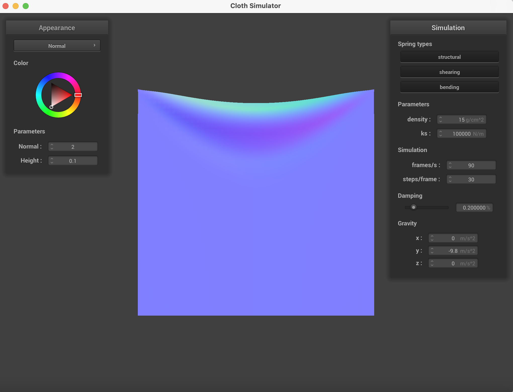
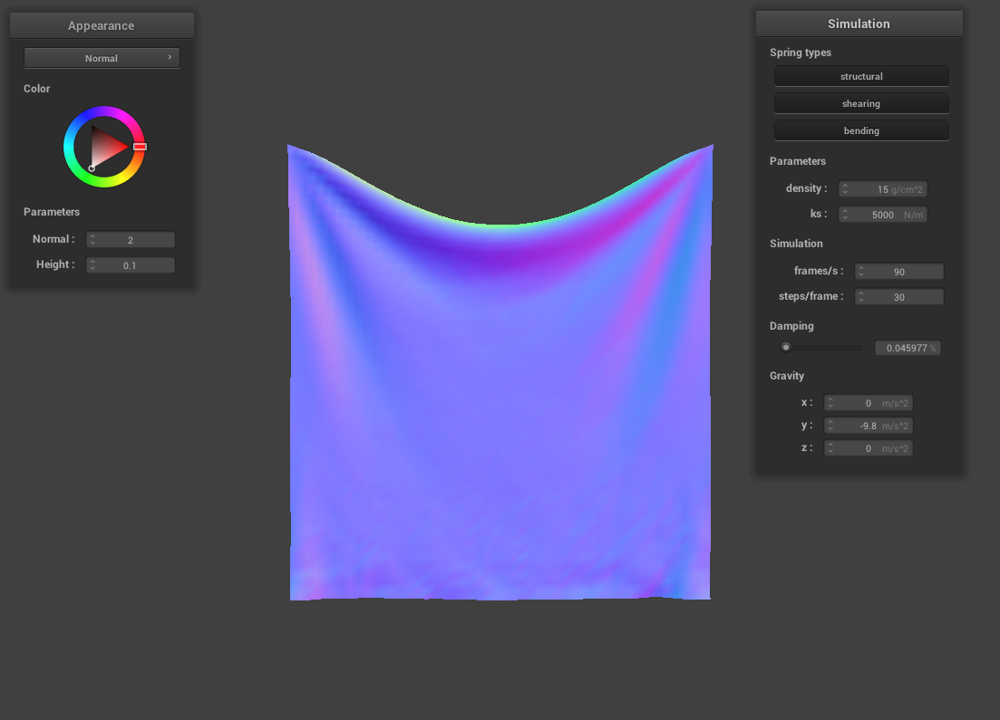
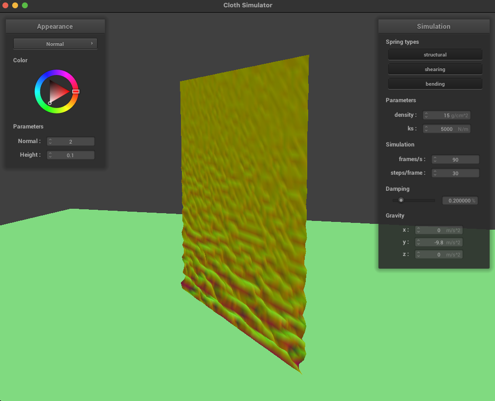
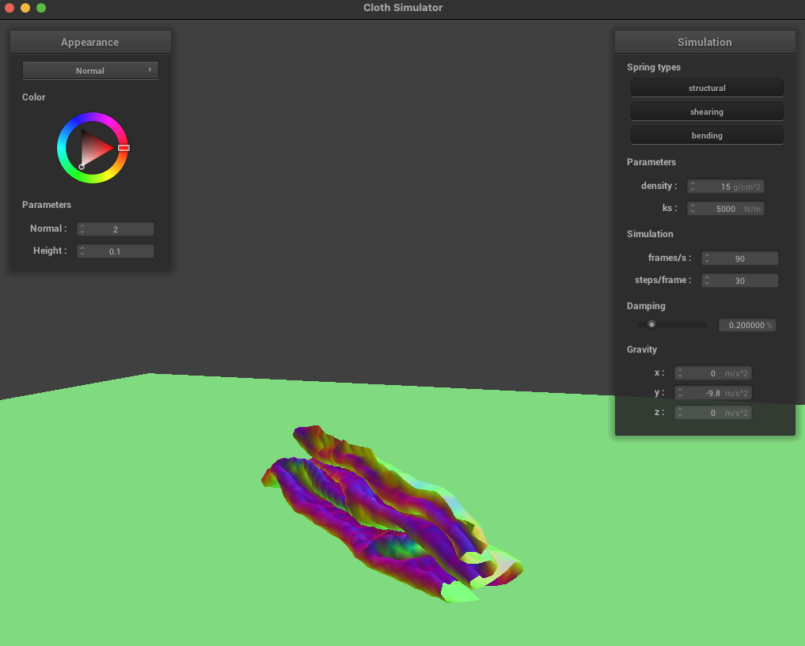

Overview
In this project we implemented the collision and physics simulation. In the first part we implemented masspoints and springs to describe the physcial character of the cloth object. In the second part, we implemented the simulation with numerical integration to simulate the motion of the cloth. In the third part, we computed the collision between object and primitives. In this case, we implemented the collision between the objects (cloth), sphere and plane. In the fourth part, we added the self-collisions of the cloth. It guaranteed that the cloth will collide with itself to avoid it through itself. In the fifth part, we modifies different kinds of shader - Diffuse, Blinn-Phong, Texture Mapping, Displacement and Bump Mapping, and Environment-mapped Reflections to provide vivid visual effects on the objects.
Part I: Masses and springs
Take some screenshots of scene/pinned2.json from a viewing angle where you can clearly see the cloth wireframe to show the structure of your point masses and springs.
Show us what the wireframe looks like (1) without any shearing constraints, (2) with only shearing constraints, and (3) with all constraints.
Part II: Simulation via numerical integration
Experiment with some the parameters in the simulation. To do so, pause the simulation at the start with P, modify the values of interest, and then resume by pressing P again. You can also restart the simulation at any time from the cloth's starting position by pressing R.
-
Describe the effects of changing the spring constant ks; how does the cloth behave from start to rest with a very low ks? A high ks?
Changing ks affects the rigidness of the cloth. With a very low ks, the cloth stretches more when released, and I can clearly see that the cloth bends forwards and backwards as it drops down. With a high ks, the cloth behaves more like a rigid object. The bending behavior decreases, and the final stretch is much less than before.

origin with ks = 5000 ks = 100 ks = 100000 -
What about for density?
Change density affects how much the cloth swings back and forth when it falls down. With low density, the cloth looks very light so that it does not swing back and forth that much, and the final stretch is less. With high density, the cloth becomes very heavy. I can observe some bending at the bottom of the cloth when it drops down, and it streches more.
origin with density = 15 density = 1 density = 1000 -
What about for damping?
Change damping affects the "softness" of the cloth. With the low damping, it falls down quickly, its shape changes rapidly, and ripples on its surface. This affect makes it looks like silk. With the high damping, it falls down slowly, its shape changes slowly, and its surface is firm. This makes it looks hard denim.
origin with damping = 0.2 damping = 0.05 damping = 0.8
Show us a screenshot of your shaded cloth from scene/pinned4.json in its final resting state! If you choose to use different parameters than the default ones, please list them.
Part III: Handling collisions with other objects
Show us screenshots of your shaded cloth from scene/sphere.json in its final resting state on the sphere using the default ks = 5000 as well as with ks = 500 and ks = 50000. Describe the differences in the results.
With ks=500, the cloth seems more stretchy. When it collides with the sphere, we can clearly see how the impact causes the cloth to swing inwards and outwards. The cloth also stretches more towards the bottom. With ks=5000, the cloth becomes less stretchy. There is only a light swinging from the edges of the cloth at collision, and the stretch is less than before. With ks=50000, the cloth seems really rigid. There is no swinging at collision, and there are less wrinkles on the cloth.Show us a screenshot of your shaded cloth lying peacefully at rest on the plane.
Part IV: Handling self-collisions
Show us at least 3 screenshots that document how your cloth falls and folds on itself, starting with an early, initial self-collision and ending with the cloth at a more restful state (even if it is still slightly bouncy on the ground).
Vary the density as well as ks and describe with words and screenshots how they affect the behavior of the cloth as it falls on itself.
-
Density
When the cloth first starts to fall, cloth with smaller density has larger "waves" and cloth with larger density has smaller but denser "waves". When the entire piece of cloth has fallen down to the plane, smaller density leads to larger folds while larger density leads to smaller but more winkles.density = 3.0 g/cm^2 density = 15.0 g/cm^2 density = 100.0 g/cm^2 just started falling just started falling just started falling finished falling 
finished falling finished falling restful state restful state restful state -
ks
When the cloth first starts to fall, cloth with smaller ks has smaller waves at the bottom, while cloth with larger ks has larger waves. Larger ks makes the cloth easier to unfold after the entire piece drops to the plane.ks = 50 N/m ks = 5000 N/m ks = 50000 N/m just started falling  just started falling just started falling 
finished falling  finished falling finished falling restful state restful state restful state
Task V: Environment-mapped Reflections
Explain in your own words what is a shader program and how vertex and fragment shaders work together to create lighting and material effects.
Sharder program helps us to create a visual effects like material effect and lighting in a 3D scene. Vertex shader helps us to build up the object in the world coordinate, transform the position from object space ot world space. Fragment Sharder takes the position information and light information processed by vertex sharder to compute the color value of each pixel of the object.Explain the Blinn-Phong shading model in your own words.
Bling-Phone shading model gives a combination of three types of shading: diffuse shading, specular shading, and ambient shading. Diffuse shading is independent of viewing direction, and is scattered uniformly in all directions. Specular shading depends on viewing direction and represents the light that travels towards camera direction. Ambient shading is a constant color that is added to the scene.|
|
|
|
|
|
Show a screenshot of your texture mapping shader using your own custom texture by modifying the textures in /textures/.
Show a screenshot of bump mapping on the cloth and on the sphere. Show a screenshot of displacement mapping on the sphere. Compare the two approaches and resulting renders in your own words. Compare how your the two shaders react to the sphere by changing the sphere mesh's coarseness by using -o 16 -a 16 and then -o 128 -a 128.
Although both appraches produces texture, bump shading does so by only manipulating colors to create the illusion of texture, while displacement shading does so by a combination of manipulating colors and actually shifting the vertices. Therefore, on the rendered result from bump shading, the edge of the ball is smooth, but the resulting ball from displacement shading has a rough edge where the narrow bands are actually falling inwards.When changing coarseness from 16 to 128, there is not much observable difference from the bump shader. However, for the dispacement shader, we can clearly see that the bands are coming inwards with coarseness equals 128, while this is not obvious with coarseness equals 16.
| -o 16 -a 16 | -o 128 -a 128 |
|
|
|
|
|
|
|
|
|